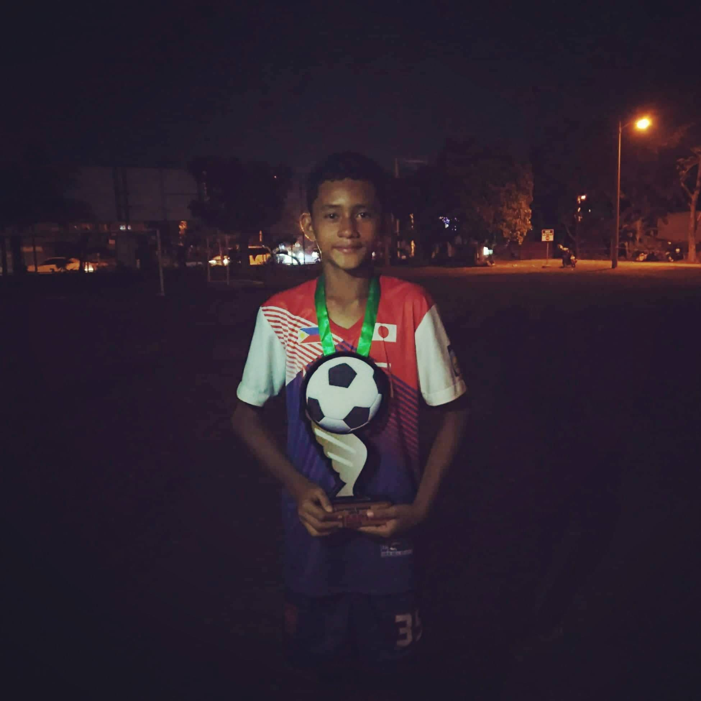
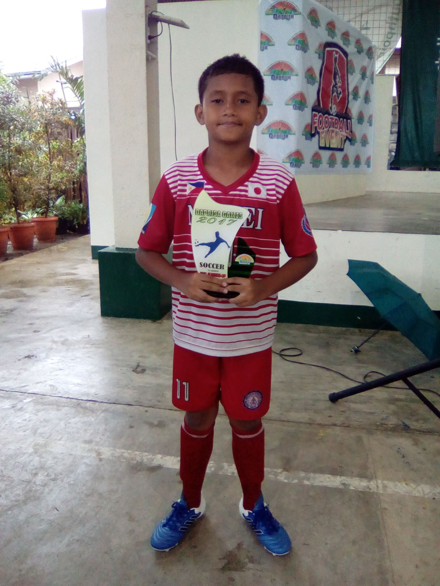
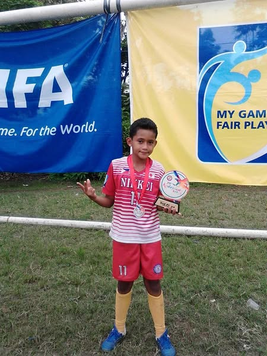

I started playing football when I was 11 years old. I loved it right away because it needs smart
planning, good skills, and teamwork. I still remember my first time on the field, the sound of
the whistle and the feeling of being one with my teammates, instantly understanding that on the pitch,
success is a collective effort, not a solo one. This first lesson in interdependence—knowing
when to lead and when to trust a teammate—is something I now apply daily in group projects and
collaborative tasks.
I spent a lot of extra time practicing. I worked on my foot movements, getting stronger, and
watching how the pros played. It meant giving up fun afternoons for tough training, but I did it.
This commitment taught me the real meaning of discipline and delayed gratification. There
were moments when a game demanded a quick decision under extreme pressure—a defender
closing in, the clock running down—and those split-second choices are no different than having to
pivot quickly in a professional or academic environment when a plan unexpectedly falls apart.
Football taught me how to operate effectively when the stakes are high and the margin for error is thin.
The photo shows me right after we won a tournament. This trophy isn't just a prize. It stands for all
the early mornings, late-night practice, and never giving up on my team or myself. It shows
how much I've grown from that young kid, and it tells me to keep going.
It’s a physical reminder that failure on the field—missing a penalty, losing a tough match—is never final.
It's just feedback. Each loss taught me the importance of resilience and getting back up, which
has been invaluable in overcoming academic and personal setbacks.
From that wide-eyed 11-year-old to today's dedicated player, my journey reflects continuous growth. Every sprint, every tackle, every perfectly timed through ball has shaped not just my skills, but my character. The pitch became my classroom, teaching lessons no textbook could match.